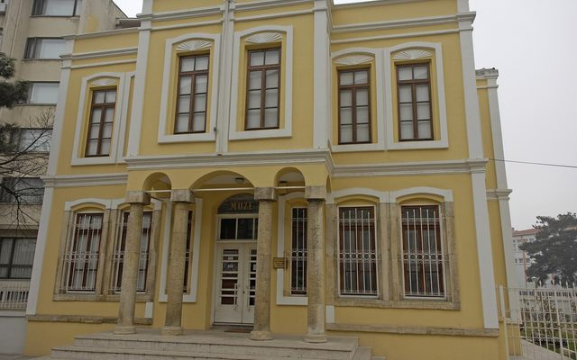

Home › Things to see, province by province › Kırklareli
The Kültür Varlıkları guide lists 4 places in Kırklareli: 1 museum, 1 natural site, 1 archaeological site, 1 religious building. Below you will find the highlights, a map and the full list.
⭐ Highlights

1 · Kırklareli · MuseumKırklareli Museum
Kırklareli Museum holds one of Türkiye's most important collections on Thrace's prehistory.

2 · Kırklareli · Natural siteDupnisa Cave
Dupnisa Cave, near Sarpdere village in Demirköy, Kırklareli, deep in the forests of the Strandzha (Yıldız) Mountains, was the first cave in Thrace opened to tourism.
3 · Kırklareli · Archaeological siteDemirköy Iron Foundry
The Demirköy Foundry, set in the Strandja forests of Demirköy in Kırklareli, is the ruin of a historic Ottoman foundry that produced cannonballs and iron goods.